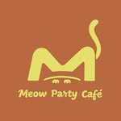
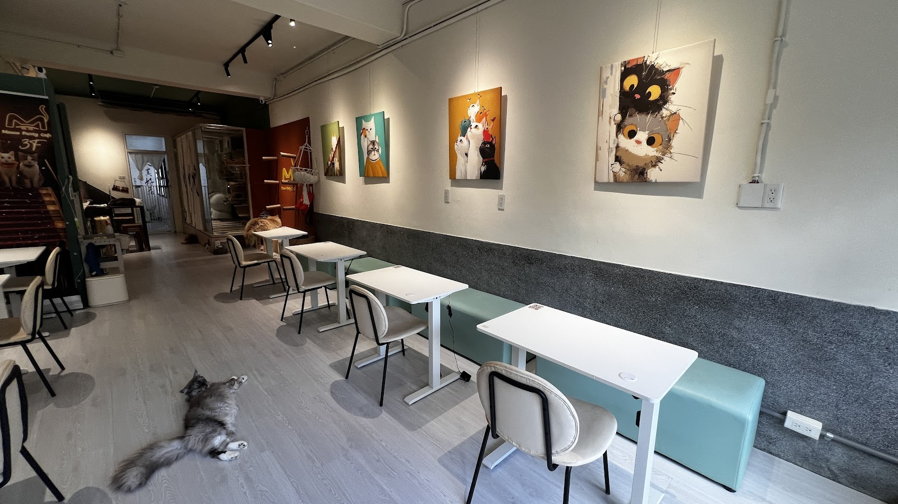
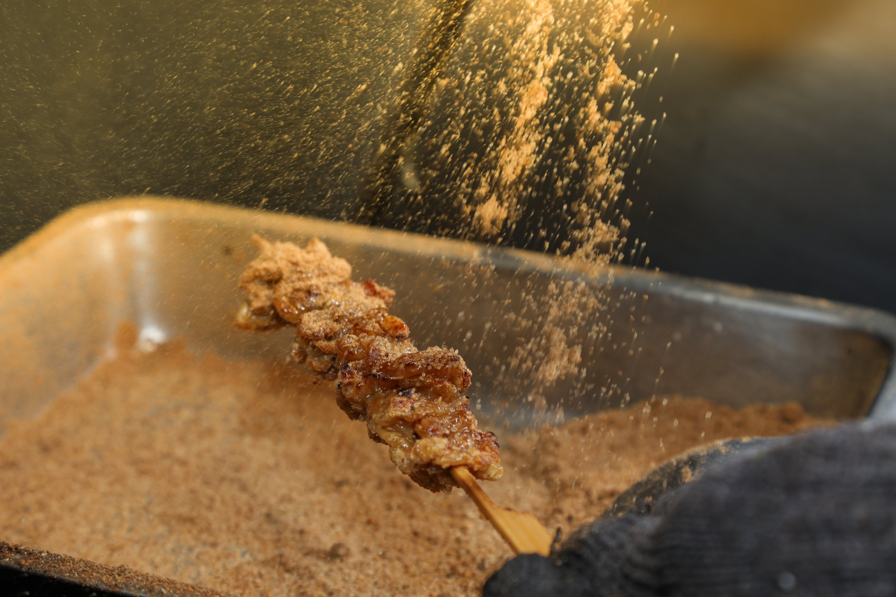
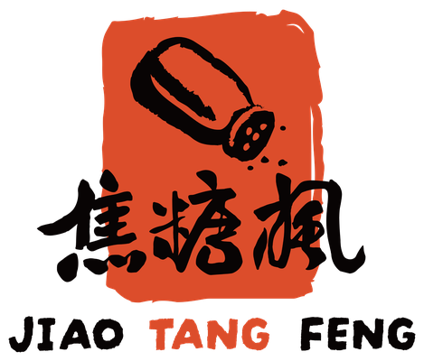

PUBLIC INTELLIGENCE · MEETING BRIEF
不只是一家
貓咪咖啡廳
從療癒空間，走向「餐飲 × 內容 × 旅遊」的跨品牌營運系統。
Meow Party Café2026.11.0814 頁自然女聲導覽
M
圖：Google Maps 公開商家照片｜資料截至 2026-11-08
01 · EXECUTIVE TAKE
真正的機會，不是多寫幾篇貼文。
是把分散的品牌，串成一套營運系統。
蘇敏惠人脈 × 內容 × 經營
AI 最適合先做：口碑、訂位、內容、熟客與跨品牌導流
02 · BRAND BASELINE
2026 年初新開幕，早期能見度已經建立

1998惠特影科技設立
2026.01喵趴公開新開幕
2026.11約十個月累積 138 則評論
證據邊界：可確認「2026 年初開幕」，但沒有足夠證據把 1 月 17 日當作正式首日營業。

Google Maps 公開商家照片03 · EXPERIENCE
賣的不是咖啡，
是兩小時的療癒感
互動是核心商品，不是裝飾。
平日 Wi‑Fi、插座與不限時情境。
中山商圈、捷運一分鐘生活圈。
座位不擁擠，保留貓咪活動區。
04 · REPUTATION
口碑不差，但還沒成為商圈標竿
4.4
★★★★★
138 則 Google 評論
常見消費區間 NT$200–400店齡與定位不同，這不是直接排名；它提醒我們：中山站顧客有高評分替代選擇。
05 · LOVE SIGNALS
顧客反覆稱讚的，集中在四件事
🐈
貓咪親人會主動靠近，照顧狀況被肯定。
🤝
人情味老闆與店員親切，願意聊天。
🛋️
舒適感適合放鬆，也能帶電腦工作。
🚇
交通強中山站生活圈，自帶逛街人流。
「療癒」「親人」「舒服」「會再來」
06 · FRICTION
真正拖累轉換的，是一些小摩擦疊在一起
入口難找
商家名稱直接寫入上樓指示，代表導航摩擦是真問題。
價值感
少量評論質疑飲品份量、甜點選擇與方案價格。
環境穩定
氣味、局部偏熱仍需用巡檢與感測器驗證。
資訊不一
營業時間與預約管道在名片、IG、iCHEF 間出現落差。
先補漏，再投放。資訊一致、入口清楚、體驗穩定，比再買一波流量更重要。
08 · FOUNDER MAP
她的能力不是單點，而是跨產業整合
蘇敏惠女王喵 · Mifi Su
資訊、影視、廣告、活動與顧問
股東／執行董事；連鎖、加盟、活動
貓咪、空間、社群與熟客
海景住宿、活動與旅遊內容
公開角色與密切參與已交叉確認；未確認的同名公司不列入，旅宿法定所有權不硬連結。


圖片：焦糖楓官方網站09 · CHAIN EXPERIENCE
焦糖楓證明她懂的，
不只是開店，還有複製與擴張
- 直營／加盟知道多店一致性的難度
- 中央製程懂 SOP 與品質控制
- 品牌活動能整合內容、場域與人脈
- 跨店導流具備會員共用的想像空間
10 · HOSPITALITY
從城市療癒，延伸到
海岸度假體驗
蘇敏惠公開密切參與或投資推廣；目前不足以證明她是唯一法定負責人。
圖：Google Maps 公開商家照片｜動態數字截至 2026-11-08
11 · COMPLIANCE
可以談機會，但必須先確認最新合規狀態
截至2026.10.08列案管理中
台東縣政府「10 月非法民宿名單」將「季澄太空艙民宿」列為第 74 項。
- 網路同時出現互相矛盾的民宿證號資訊。
- 應以主管機關最新書面狀態為準。
- 確認前不建議擴大對外投放或自動化訂房。
現場溫和問法
「季澄目前旅宿登記與主管機關列管進度，最近是否已經更新？如果還在處理，我們先協助內部營運，不急著擴大對外投放。」
12 · 14-DAY PILOT
先做一件兩週能證明的事：口碑＋訂位漏斗健檢
近 90 天評論、社群內容、營業資訊與訂位入口
稱讚、抱怨、資訊衝突、入口詢問與流失點
每週行動清單、人工審核回覆草稿、內容題目
詢問下降、完成率上升、回覆速度改善
不讀私人訊息不自動發文不碰付款資料人員保留最後決定
13 · ROADMAP
先補漏，再留客，最後才跨品牌放大
補漏
- 統一營業與訂位資訊
- 15 秒上樓路線影片
- 每週口碑儀表板
- 空氣與溫度巡檢
留客
- 會員分群與回訪標籤
- 固定內容欄目
- 平日工作票／月票測試
- 每月一場小型活動
串聯
- 喵趴 × 焦糖楓活動餐飲
- 合規後再測季澄導流
- 共用流量與訂位看板
- 依證據決定是否擴大
14 · MEETING
今天不賣大系統。只爭取一個可驗收的小試點。
60 秒介紹
「我們不是只幫店家寫貼文，也不是賣一個聊天機器人。我們是一個由不同專長 AI 夥伴組成的營運團隊。今天先理解妳最耗時間、最影響營收的一個問題，用兩週做小試點；有效再擴大，沒有效就停。」
先問四題
- 現在最想改善來客、客單、回訪，還是人力？
- 顧客預約前最常問哪三件事？
- 唯一正確的訂位入口是哪一個？
- 三個品牌未來要獨立，還是形成生活品牌群？
本簡報為公開資料研究與會談輔助，非店家官方文件。旁白為 zh-TW-HsiaoChenNeural 自然合成女聲，非真人錄音。